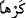

yerine getirilen bir âmirin kendisine itâat eden memuruna doğru yönelen ve memurun
alır almaz gereğini yerine getirdiği emrine benzetilmiş -yani, “benzetilen” durum,
“kendisine benzetilen” durumu anlatan bir ibâre ile ifâde edilmiş- olmaktadır.
(
-
) “İster istemez” kelimeleri, hâl makamında gelmiş masdarlardır. (__WORD__),
boyun eğmek anlamında olup (__WORD__) de bunun zıddıdır. Kendiliğinizden boyun eğerek ya
da içinize sindiremeyerek; yani ister gönül rızasıyla ister şiddetle kaçınarak,
demektir. Bu da Allah’ın kudretinin göğe ve yere kesinlikle tesir edeceğini; karşı
koymalarının imkânsız bulunduğunu anlatan temsilî bir ifâdedir. Çünkü istemek ve
istememek; irâde, ihtiyar ve akıl sahibi varlıkların kârıdır. Yer ve gök ise irâde ve
ihtiyarı olmayan cansız varlıklar kabîlindendir.
“İkisi de “isteyerek” yani gönül rızamızla “geldik.” dediler.”
Bu da gök ve yerin rabbânî kudretten tam anlamıyla –bizzat- etkilenip tıpkı
kendilerine emredildiği biçimde oluştuklarını temsilî olarak anlatmakta ve şu an var
oldukları şekilleri ile var olmalarının eşsiz ve sınırsız hikmet gereği gerçekleştiğini
tasvir etmektedir; çünkü (__WORD__) lafzı, bunu haber verirken (__WORD__) ise aksini ifâde eder.
Şâyet âyette, lafız yönüne itibar ederek (__WORD__) veya -çoğul olarak gökler ve arzlar söz
konusu olduğu için- mânâ yönüne itibar edilerek (__WORD__) değil de akıl sahibi erkeklere
âid bir zamirle (__WORD__) denilmesinin hikmetini sorarsan, derim ki bu sîganın tercih
edilmesi gök ile yerin birer muhatap olarak cevap verme makamında olmalarından ileri
gelmektedir. Akıl sahiplerine özgü bir şeye (hitâba) lâyık görüldükleri içindir ki akıl
sahiplerine özgü bir muâmeleye tâbi tutulmuşlardır; çoğul yapılmalarının sebebi ise
medlûllerinin çok sayıda olmasından dolayıdır. Tıpkı Yûsuf (a.s.)’ın “Ben rüyamda on
bir yıldızla Güneş’i ve Ay’ı bana secde ederlerken gördüm.” (Yûsuf 12/4) sözünde
geçen (__WORD__) lâfzında olduğu gibi.
et-Te’vîlâtü’n-Necmiyye’de der ki: Kur’an, Yüce Allah’ın göğe ve yere “İster
istemez buyruğuma gelin” hitâbını işittirdikten sonra, henüz olmayan gök ve yeri -
cevap verebilsinler diye- eksiksiz kudretiyle konuşturduğuna, onların da: “İsteyerek
geldik” dediklerine işaret ediyor. Bunları müennes bir lafızla (__WORD__) zikretmesinin sebebi
de başlangıçta ma’dûm ve müennes bulunmalarıdır. Sonunda müzekker bir lafızla
bahsetmesi ise bunlara -henüz yokken- bir hayat ve akıl vermesinden ve akıl sahiplerine
özgü bir sîga ile (__WORD__) yani “isteyerek geldik” demelerinden ötürüdür.
Bir hadiste geçtiğine göre Hz. Mûsâ (a.s.) şöyle demiş:
- “Ya Rab! Şâyet gök ve yer sen onlara: “İster istemez buyruğuma gelin.”
buyurduğunda karşı gelmiş olsalardı, bunlara ne yapardın?”
Yüce Allah şöyle cevap vermiş:
– “O zaman yaratıklarımdan birine emrederdim de onları yutardı.”
– “Bu yaratığın nerede ya Rab!”
– “Benim meralarımdan birinde.”